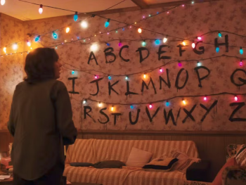
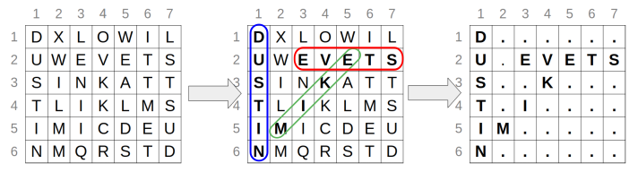

In what concerns the continuous evaluation solving exercises grade during the semester, you should submit until 23:59 of December 20th
(this exercise will still be available for submission after that deadline, but without couting towards your grade)
[to understand the context of this problem, you should read the class #10 exercise sheet]
In this problem you should read from the standard input using functions such as input() and you should write to the standard output using functions such as print()
(you are expected to read the class instructions, that will help you build a solution with structured programming and incremental development)

Ever vigilant and determined to protect her family, Joyce Byers has recreated her wall of Christmas lights and letters, hoping to communicate with the Upside Down. Each light flickers seemingly at random, but Joyce notices that some sequences of letters form meaningful words, hinting at locations, objects, or warnings from the other world.To make sense of the messages, Joyce decides to carefully scan the wall, which contains a grid of uppercase letters. She has a list of words and wants to check if they appear on the grid. Words can appear horizontally, vertically, or diagonally (in any direction) and they might overlap. Your task is to help her look for the words and produce a cleaned version of the wall where only the letters that are part of a word remain visible, and replace all others with dots ('.').
The following figure illustrates an example grid and three words (DUSTIN, MIKE and STEVE), ending in the cleaned version:

Write a program that given a word grid and a list of words, reports if each word appears or not, and in case it appears, reports its starting coordinate and direction. Moreover, it should produce a cleaned version of the grid, replacing all letters that do not appear on a word with a dot.
The first line contains two positive integers: the number of rows R and columns C that determine the size of the grid. This is followed by R lines, each with C uppercase letters, representing the letter grid.
The following line contains an integer N, the number of words to look for. N lines follow, each with a Wi word of uppercase letters to look for.
The first N lines should correspond to the list of words. The i-th line should contain
Wi: NOT FOUND if the word Wi does not appear in the grid.Wi: X Y DIR if the word Wi appears, starting on cell (X,Y) and in direction DIR, where DIR is one of the eight possible directions: N, S, E, W, NE, NW, SE or SW (as depicted on the compass rose below).After the list of words, you should output the cleaned version of the grid as explained before (see the example output for clarification).
The same letter might be used by different words, but it is guaranteed that a word appears at most once on the grid.
The following limits are guaranteed in all the test cases that will be given to your program:
| 0 ≤ R,C ≤ 50 | dimensions of the grid | |
| 1 ≤ N ≤ 50 | number of words | |
| 1 ≤ |Wi| ≤ 50 | size of each word |
| Example Input | Example Output |
|---|---|
6 7 DXLOWIL UWEVETS SINKATT TLIKLMS IMICDEU NMQRSTD 5 MIKE WILL DUSTIN STEVE JONATHAN |
MIKE: 2 5 NE WILL: NOT FOUND DUSTIN: 1 1 S STEVE: 7 2 W JONATHAN: NOT FOUND D...... U.EVETS S..K... T.I.... IM..... N...... |
Content by Pedro Ribeiro and Bernardo Portela (DCC/FCUP), migrated from dcc.fc.up.pt/~pribeiro/aulas/ip2526/problems/ip099.html.